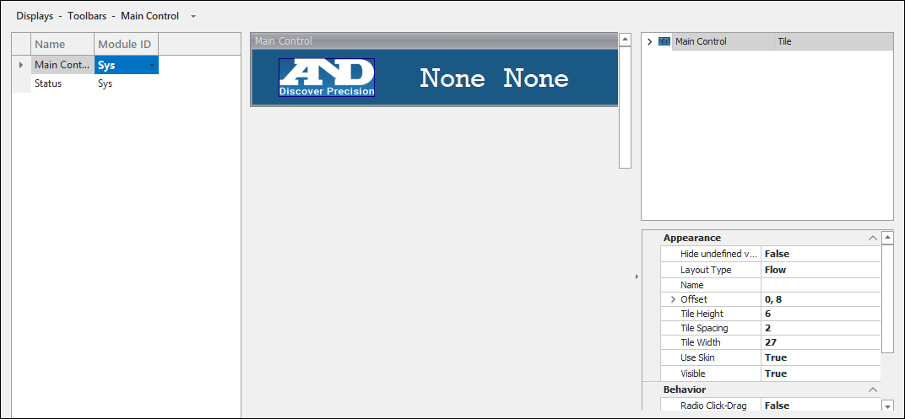
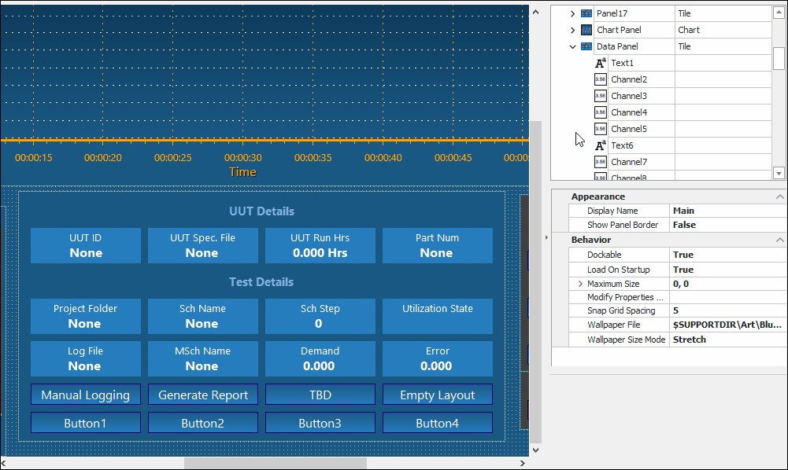
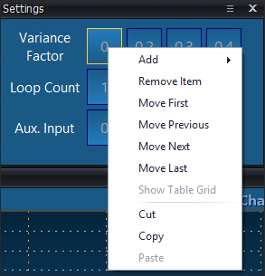

iTest User's Guide
Toolbars provide quick access to functions and information. They can be used to display buttons to perform actions, launch applications, or control schedules, and they can also be used to display indicators for viewing channel information. In AutomationPanel, toolbars function as docked panels or layouts, and they remain visible regardless of which layout is active. For more information, refer to the Toolbars documentation.
You can create new toolbars by selecting Displays > Toolbars from the SolutionBuilder main menu. The Toolbars editor is similar to the Layouts editor. It contains a list of toolbars which can be used to add, modify, or delete toolbars, an editing area, and the properties panel.
Toolbars Editor

The following sections detail various ways you can interact with the editor's interface.
To make editing easier, you can expand the editing area by hovering over the line dividing the editor and the properties panel, selecting the section divider, and dragging it to the right to make the area larger. To collapse the properties panel completely, click the arrow icon in this section.
Expand/Collapse Properties Panel - Layout Editor
Use the property panel to browse and edit the available properties; thereby, affecting the appearance, behavior, and other miscellaneous functions of the panel.
Edit Panel Selection
When you select a panel, a bold yellow line displays around the panel, and the panel's properties display in the property panel. When you select a sub-object, such as a channel tile, text tile, individual gauge, or individual bar, a thin yellow line displays around the sub-object, and its properties display in the property panel.
Panel Selection

The following keyboard shortcuts are supported in the editor:
Shortcut Options and Descriptions
| Keyboard Shortcut | Description |
| CTRL + Z | Undo the previous action. |
| CTRL + Y | Redo the previous undone action. |
When adding a new toolbar, you can select the toolbar type as a panel or a layout. When you select Panel, the toolbar will have the same properties as the panel selected. When you select Layout, the toolbar will have the same properties as a layout.
To add a new layout toolbar, do the following:
To add a new panel toolbar, do the following:
The following options are available when you right-click in the editor:
Right-Click Descriptions: List of Toolbars
| Option | Editor | Description |
| Add Panel Toolbar | Toolbar | Opens the Select Panel for Toolbar dialog. For more information, refer to the Adding a New Panel Toolbar documentation. |
| Add Layout Toolbar | Toolbar | Adds a new blank layout toolbar to the solution. For more information, refer to the Adding a New Layout Toolbar documentation. |
| Remove | Toolbar | Removes a selected toolbar. |
| Rename | Toolbar | Enables editing of the toolbar name. |
| Duplicate | Toolbar | Duplicates a selected toolbar. |
| Cut | Toolbar | Cuts a selected toolbar and removes it from the list. |
| Copy | Toolbar | Copies a selected toolbar. |
| Paste | Toolbar | Pastes a copied or cut toolbar. |
| Undo | Toolbar | Undoes the last action. |
| Redo | Toolbar | Redoes the last undone action. |
| Show/Hide Module ID | Toolbar | Shows/hides the module ID. |
Right-Click Descriptions: Property Panel
| Option | Editor | Description |
| Expand All | Toolbar | Expands all available nodes in the layout/panel. |
| Collapse All | Toolbar | Collapses all available nodes in the layout/panel. |
| Help... | Toolbar | Opens the help documentation for the selected panel. For more information, refer to the Introduction to SolutionBuilder documentation. |
Depending on whether the panel or one of its sub-objects is selected, different options are available in the right-click menu.
 |
NOTE: | Right-click menu options vary depending on panel and sub-object type. |
Panel Selection Right-Click Options
Sub-Object Right-Click Options

Right-Click Descriptions: Common Panel Menu Options
| Option | Editor | Description |
| Undo | Toolbar | Undoes the last action. |
| Redo | Toolbar | Redoes the last undone action. |